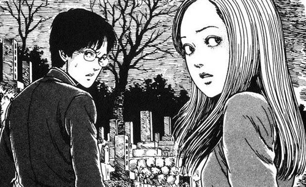

"Uzumaki" é uma história de horror que se passa em uma pequena cidade japonesa assombrada por uma maldição inexplicável relacionada a espirais. A trama segue o jovem casal Kirie Goshima e Shuichi Saito enquanto testemunham eventos cada vez mais bizarros e perturbadores que acontecem na cidade, à medida que os habitantes são consumidos pela obsessão e medo das espirais.